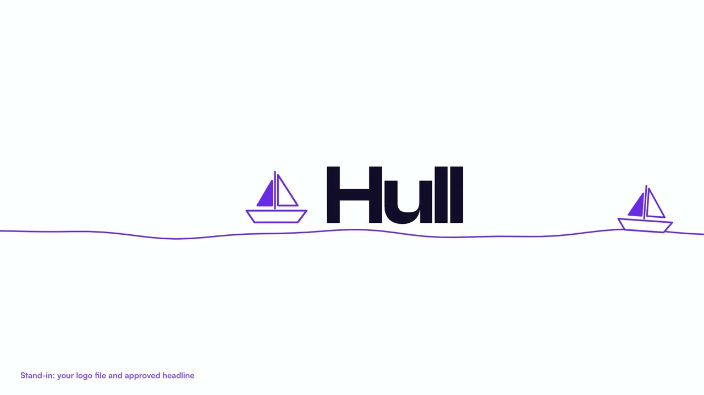
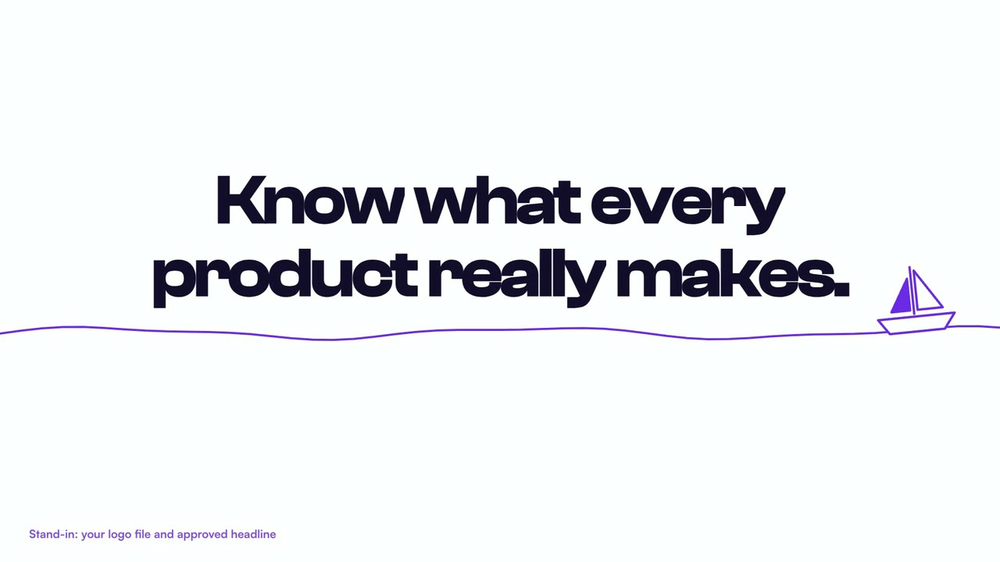
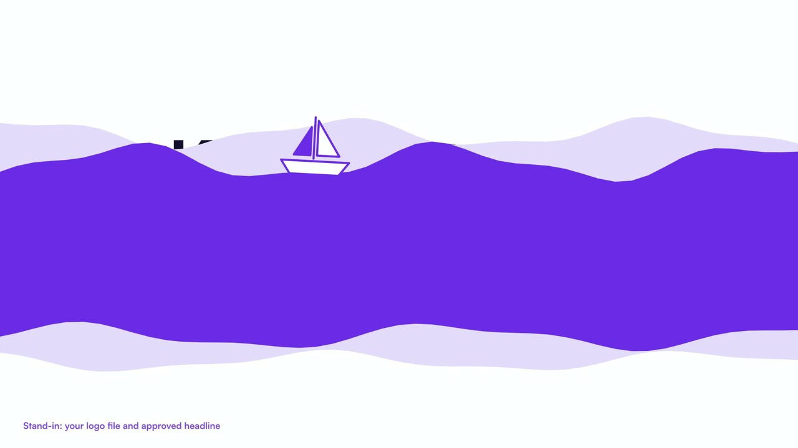
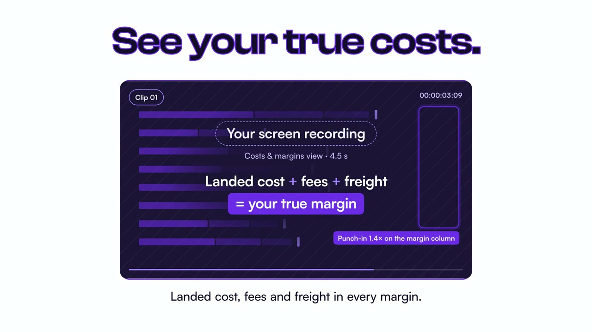
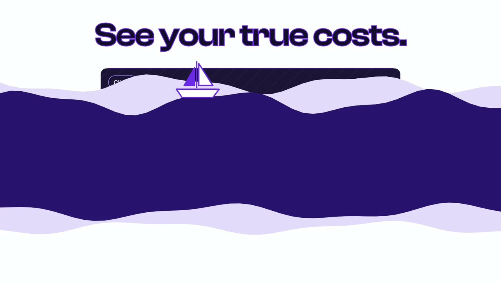
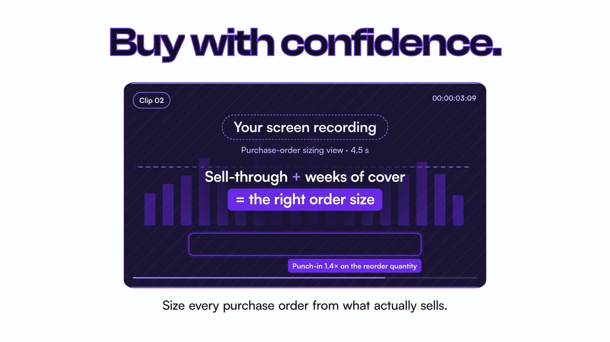
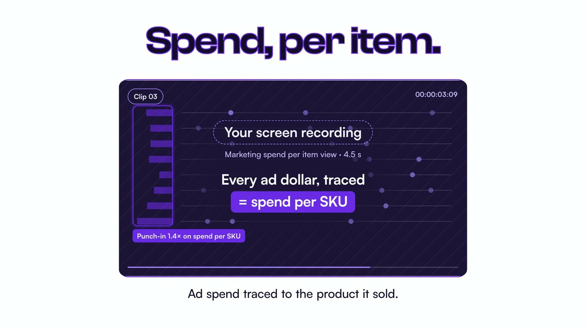
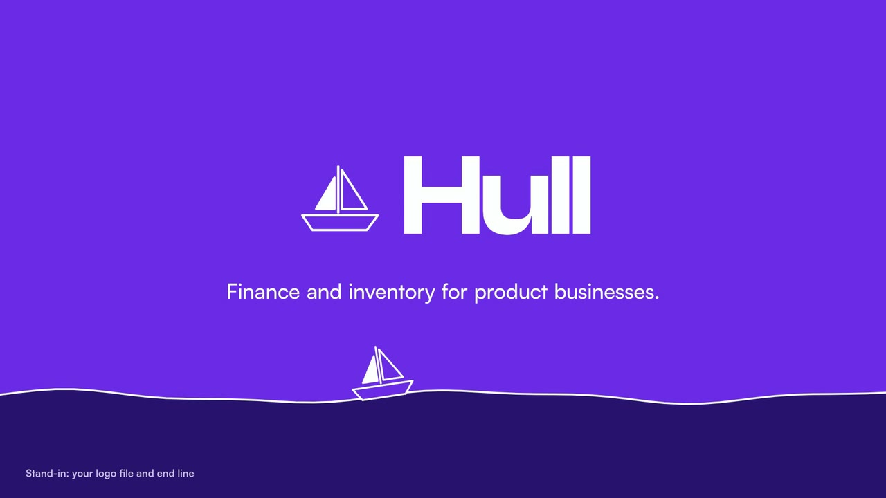

Every title, wave transition and beat is finished. The three windows are marked for your own screen recordings: for now each holds the act's claim over an abstract motion pattern, so nothing of your interface is redrawn.
28.0 s (840 frames)16:9, master at 1920×1080, 30 fpsSound off: every beat carried by on-screen textSound on: a temp click marks the 120 BPM grid; your track replaces itThis preview: 720p, watermarked
Stills from the cut. Titles rise out of the waterline in purple outline and fill to ink on the beat; the boat rides every transition.








Cut to a 120 BPM temp grid (beat 0.5 s, bar 2 s; unmute the preview to hear it as a temp click, accent on every bar) that assumes your track plays from its 00:15 mark. Once I have the file I lock the cuts to its real downbeats; if the music should instead enter at 00:15 of the video, the open becomes a silent title section and the three acts sit on the music.
Headlines and supporting lines below are stand-ins written from your brief at the same length as the approved ones will need to be, so the timing holds when yours go in.
| Scene | Time | On screen | Footage slot (your recording) | Motion |
|---|---|---|---|---|
| Open | 00.0 – 02.4 | Full Hull logo | — | Waterline draws on, boat sails in, logo rises out of the water |
| Hook | 02.4 – 05.0 | Know what every product really makes. | — | Logo sinks, words rise in purple outline, fill to ink at 03.5 |
| Wave 1 | 04.6 – 05.4 | — | — | Swell band travels up the frame, boat on the crest; crest crosses centre on the 05.0 beat and the next act is revealed under its tail |
| Act 1 | 05.0 – 11.0 | See your true costs. Landed cost, fees and freight in every margin. | Clip 01: costs and margins view, 4.5 s used, punch-in 1.4× on the margin column at 08.0 | Title fills on the 05.5 beat and settles at the top by 05.95; the window springs up from below frame at 06.0 (never under the title); slow 2.5 % push on the footage |
| Wave 2 | 10.6 – 11.4 | — | — | Deep-water swell |
| Act 2 | 11.0 – 17.0 | Buy with confidence. Size every purchase order from what actually sells. | Clip 02: purchase-order sizing view, 4.5 s used, punch-in on the reorder quantity at 14.0 | Same grammar as Act 1 |
| Wave 3 | 16.6 – 17.4 | — | — | Purple swell |
| Act 3 | 17.0 – 23.0 | Spend, per item. Ad spend traced to the product it sold. | Clip 03: marketing spend per item view, 4.5 s used, punch-in on spend per SKU at 20.0 | Same grammar as Act 1 |
| End card | 23.0 – 28.0 | Full Hull logo Finance and inventory for product businesses. | — | Swell stays as the purple ground, logo rises, boat crosses the sea |
These are the only open items. Everything else in the cut is final.